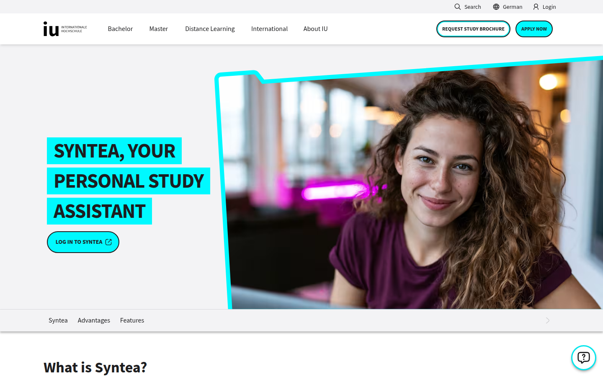
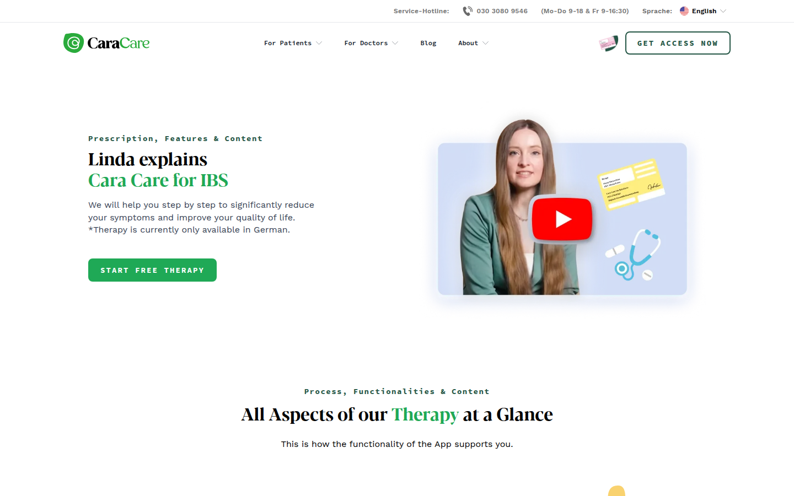
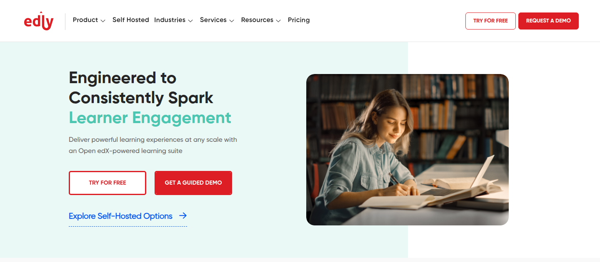

Berlin · Senior AI full-stack engineer
Systems for learning and care.
I build production LLM platforms and regulated health software. Core engineer on Syntea at IU Group. Before that, Cara Care, now part of Bayer.
Syntea
AI study assistant for more than 80,000 distance learners. Backend architecture for provider-agnostic models, real-time streaming, and multi-tenant Python services.
Python · FastAPI · Django · MongoDB · Redis · Kafka · AWS · OpenAI · Anthropic · Gemini
iu.de/en/syntea →
Cara Care
Prescribed digital therapy for irritable bowel syndrome, listed as a DiGA and later acquired by Bayer. Backend for the therapy products and the internal tools.
Django · React · TypeScript · PostgreSQL · Contentful
cara.care →
Edly
Open edX learning platform for universities and companies. LMS, marketing sites, analytics, and mentoring.
Django · React · Open edX · Docker · AWS
edly.io →
GBVMeter
MS thesis. A tool that reads news and blog text and measures gender-based violence themes with a Doc2Vec model. A COVID-19 case study, pulled from Google News, tracked a rise in reports of physical violence during lockdowns.
Python · Doc2Vec · Text mining · Google News
Experience
- 2024 to now Senior AI full-stack developer Syntea teaching systems IU Group, Berlin
- 2022 to 2024 Senior backend engineer DiGA therapies and internal tools Cara Care, Berlin
- 2018 to 2022 Senior software engineer Edly, Open edX, and analytics Arbisoft
- 2017 to 2018 Software engineer Healthcare Business Insights and GoStrive Strategic Systems International, Lahore
- 2016 Associate software engineer SugarCRM, SuiteCRM, and ETL Rolustech, Lahore
MS Computer Science, Information Technology University. Research in information retrieval, text mining, big data, and machine learning. BS Computer Science, University of the Punjab. Udacity Cloud Developer and React nanodegrees.
Ten years across startups and enterprise. Lead-engineer mindset: owning architecture, mentoring engineers, and aligning technical decisions with product outcomes. Especially interested in AI platform engineering and trustworthy AI products that scale in the real world.
Healthcare Business Insights
Membership program for hospital and health-system leaders. Built the e-learning curriculum modules, learner and trainer tracking, analytics dashboards, notifications, and subscription handling for facilities and communities.
Python · PHP · Laravel · MySQL · AWS · Analytics
Healthcare Business Insights →GoStrive
Gamified park experience across web, Android, and iOS, using BLE iBeacon proximity and Contentful for content. Built admin panels for activity tracking and reports, plus the Lumen APIs that powered the mobile apps.
Lumen · PHP · Contentful · Maps · BLE iBeacon
Focus
LLM systems, regulated digital health, and learning platforms. Turning models into production software with reliability, streaming, and long-term maintainability.
- AI platformsProvider-agnostic LLM integrations, real-time streaming, conversation and context handling
- BackendAsync Python, FastAPI, Django, event-driven systems with MongoDB, Redis, and Kafka
- Full stackReact, TypeScript, Redux, Contentful, and internal tooling for product teams
- Cloud and qualityAWS, Docker, GitLab CI/CD, pytest, mypy, and production monitoring